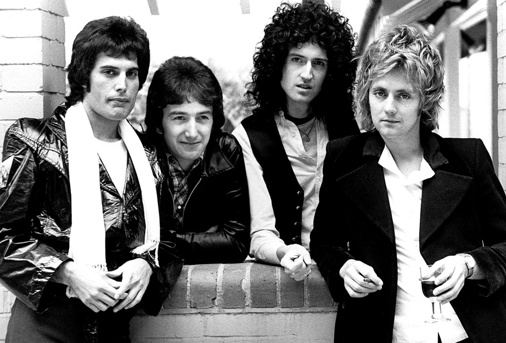

Queen
Banda británica de Rock formada en 1970 en Londres

Integrantes del grupo
Brian May
Freddy Mercury
John Deacon
Roger Taylor
Discografía
Grandes éxitos de Queen
Año
Disco
1975
A night at the opera
1986
A Kind of magic
1989
The miracle
A kind of Magic fue el album más exitoso
Sitio web oficial
pincha aquí